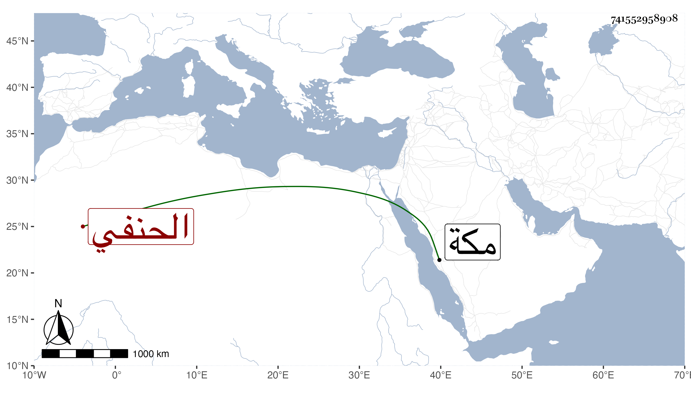

0902Sakhawi.DawLamic.ITO20230111-ara1.EIS1600.741552958908
Biography ID: 741552958908
437
أحمد بن محمد بن علي حافظ الدين أبو المعالي بن الشمس الجلالي الحنفي الآتي أبوه ويعرف بابن الجلالي . نشأ في كنف أبويه فحفظ القرآن وأخذ عن أيبه والأمين الأقصرائي والشمني وسيف الدين وابن عبيد الله والتقي الحصني وطائفة وبرع واستقر بعد أبيه في خزن كتب المحمودية وفي تدريس الألجيهية وخطابة البرقوقية وغير ذلك ولازمني في بحث ألفية العراقي وقرأ علي أربعي النووي وغيرها وكتب بخطه الحسن بعض تصانيفي وأشياء ، وناب في القضاء ثم ترك حين مناكدة ابن الشحنة له في كتب المحمودية ، وكان فاضلا متأنقا سليم الفطرة عديم الشر جمع خطبا بل وكتب على الهداية في دروسه شيئا . مات في حياة أمه بعد أن رغب حين اليأس عن التدريس والخطابة للصلاح الطرابلسي في عاشر شعبان سنة إحدى وسبعين وأنا بمكة ولم يبلغ الثلاثين عوضه الله الجنة ، واستقر بعده في الخزن سالم العبادي وفسد أمرها .
